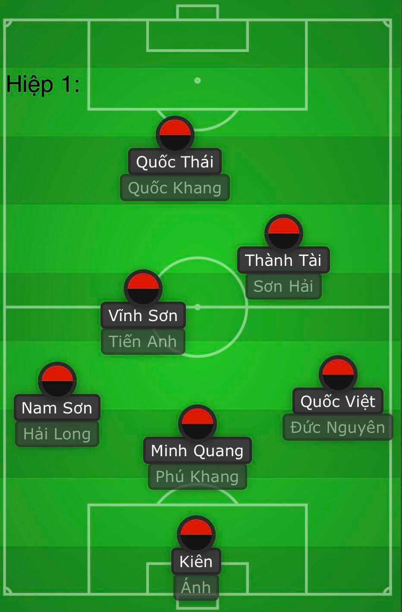
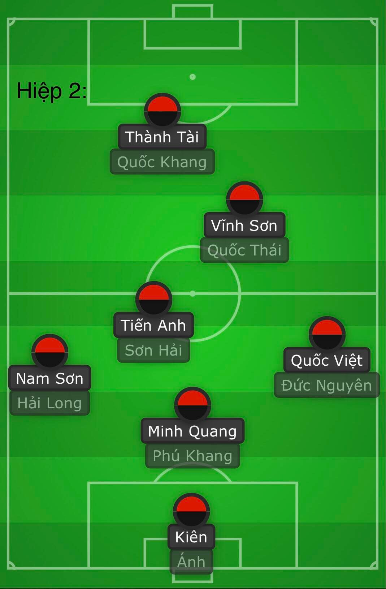
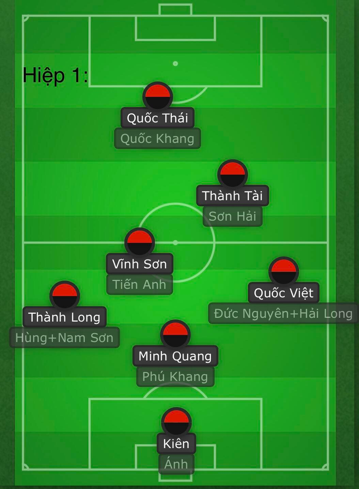

-Sau đó, vào hiệp thi đấu thứ 2, khi mà FC đã có khoảng cách nhất định với đội bạn, FC sẽ thay cầu thủ chơi có thiên hướng phòng thủ để có thể bảo toàn mành lưới đội nhà

-Ở những trận đấu kế tiếp, đội hình có ít thay đổi nhưng nhìn chung các tuyến vẫn đảm bảo được số lượng và chất lượng các cầu thủ có mặt

-Ở hiệp 2, FC sẽ tùy cơ ứng biến mà thay người sao cho phù hợp với thế trận của trận đấu